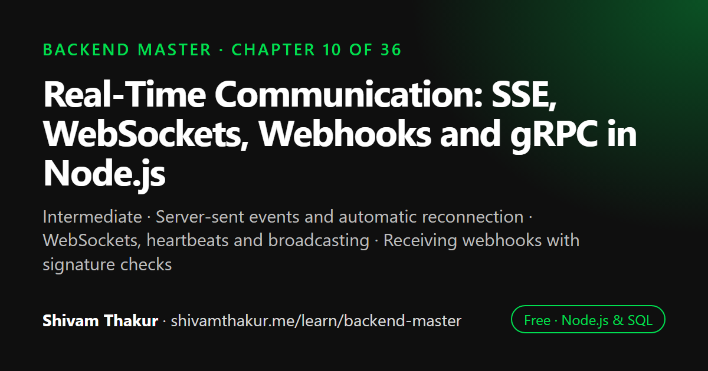

Chapter 10 of 36 · Intermediate
Real-Time Communication: SSE, WebSockets, Webhooks and gRPC in Node.js
Real-Time and Event-Driven Communication — SSE, WebSockets, Webhooks and gRPC

Not every interaction fits request and response. This chapter compares server-sent events, WebSockets, webhooks and gRPC, shows how to build and test each in Node.js, and covers reconnection, heartbeats, signed and idempotent webhook handling and when to pick which.
In this chapter you will learn
- Server-sent events and automatic reconnection
- WebSockets, heartbeats and broadcasting
- Receiving webhooks with signature checks
- gRPC services with Protocol Buffers
- Choosing between SSE, WebSockets, webhooks and gRPC
10.0 Why This Chapter Matters
Everything so far has followed one rhythm: the client asks, the server answers. That is perfect for loading a product page. It is clumsy for:
- A customer watching their order move from packed to shipped without refreshing.
- A chat message that must appear on the other person's screen now.
- A payment provider that has to tell your server "invoice #9 was paid" (your server is not the one asking).
- Two internal services that exchange thousands of small messages per second and don't want JSON/HTTP overhead.
Each of these needs a different tool. This chapter gives you the complete toolbox and, more importantly, the judgment to pick the simplest tool that works:
| Need | Tool |
|---|---|
| Server pushes updates to a browser (one direction) | Server-Sent Events (SSE) |
| Two-way, low-latency messaging (chat, games, collaboration) | WebSockets |
| Another company's server tells you something happened | Webhooks |
| Fast, typed calls between your own services | gRPC |
| Something happens, many systems should react later | Message queues (Chapter 28) |
Every code sample in this chapter was run while writing it, and the output shown is real: SSE with resume, a WebSocket chat with authentication, signed webhooks with replay protection and retries, and gRPC with streaming and deadlines.
10.1 The Communication Map
Let's start from the problem: how can a server tell a client something the client didn't ask about?
Client wants updates. Options, from simplest to most capable:
1. POLLING client asks every N seconds "any news?" "no" "any news?" "no" ...
2. LONG POLLING client asks; server holds the "any news?" ........... "yes!" → asks again
request open until there is news
3. SSE one long-lived HTTP response; server ──▶ client ──▶ client ──▶ ...
server streams events down it (one direction)
4. WEBSOCKET one long-lived TCP connection, client ⇄ server ⇄ client ⇄ ...
both sides send anytime (two directions)
5. WEBHOOK server-to-server HTTP callback provider ──POST──▶ your server
6. gRPC STREAMING HTTP/2 streams with typed service ⇄ service
messages10.1.1 Polling and long polling
Polling is the baseline and is often good enough:
setInterval(async () => {
const order = await (await fetch('/v1/orders/9')).json();
render(order.status);
}, 5000);- ✅ Trivial, works everywhere, cacheable, stateless, no special infrastructure.
- ❌ Wasteful (most responses are "nothing new") and delayed by up to the interval. 10,000 users polling every 5 seconds is 2,000 requests/second of mostly nothing.
Mitigate with conditional requests (ETag → 304, Chapter 3) and sensible intervals. For a feature updating a few times per hour, polling every 30 seconds is a perfectly respectable engineering choice.
Long polling: the server holds the request open until it has something to say (or ~30 s pass), then the client immediately re-asks. It feels real-time but costs a held connection per client and awkward timeouts. It's mostly a legacy technique now; SSE does the job better.
10.2 Server-Sent Events (SSE)
SSE is one ordinary HTTP response that never ends. The server keeps writing small text messages into it; the browser's built-in EventSource parses them.
Why SSE is underrated
- Plain HTTP: works through proxies, load balancers, auth middleware, and HTTP/2 multiplexing with no special protocol.
- Automatic reconnection built into the browser, including a "resume from where I left off" mechanism (
Last-Event-ID). - Simple text format, trivial to produce from any language.
- Limitation: server → client only (clients still use normal
POSTs to send data) and text only (JSON is fine).
The wire format
retry: 2000 ← "if disconnected, reconnect after 2000 ms"
id: 1 ← event id (browser remembers the last one it saw)
event: order.shipped ← optional event name (default "message")
data: {"orderId":"7"} ← payload; a blank line ends the event
: keep-alive ← a line starting with ":" is a comment (heartbeat)A complete SSE server (tested)
import express from 'express';
const app = express();
const clients = new Set();
let lastId = 0;
const history = []; // small replay buffer
const write = (res, { id, event, data }) =>
res.write(`id: ${id}\nevent: ${event}\ndata: ${JSON.stringify(data)}\n\n`);
function publish(event, data) {
const id = ++lastId;
history.push({ id, event, data });
if (history.length > 100) history.shift();
for (const res of clients) write(res, { id, event, data });
}
app.get('/events', (req, res) => {
res.set({
'Content-Type': 'text/event-stream',
'Cache-Control': 'no-cache',
Connection: 'keep-alive',
'X-Accel-Buffering': 'no', // tell NGINX not to buffer the stream
});
res.flushHeaders();
res.write('retry: 2000\n\n');
const last = Number(req.get('Last-Event-ID') ?? 0); // resume after a dropped connection
for (const e of history) if (e.id > last) write(res, e);
clients.add(res);
const ping = setInterval(() => res.write(': keep-alive\n\n'), 15_000); // defeats idle timeouts
req.on('close', () => { clearInterval(ping); clients.delete(res); }); // ALWAYS clean up
});
app.post('/orders/:id/ship', (req, res) => {
publish('order.shipped', { orderId: req.params.id });
res.status(202).end();
});
app.listen(3000);Client in the browser:
const es = new EventSource('/events');
es.addEventListener('order.shipped', (e) => {
const { orderId } = JSON.parse(e.data);
showToast(`Order ${orderId} shipped!`);
});
es.onerror = () => console.log('connection lost; the browser will retry automatically');Real output — one client connected, two shipments published; a second client that reconnects claiming it last saw event 1:
client 1 stream:
retry: 2000
id: 1
event: order.shipped
data: {"orderId":"7"}
id: 2
event: order.shipped
data: {"orderId":"8"}
client 2 reconnects with Last-Event-ID: 1 → receives ONLY event 2:
id: 2
event: order.shipped
data: {"orderId":"8"}That replay-on-reconnect behavior, which you would hand-build with WebSockets, is free with SSE.
The production details that bite
- Proxy buffering. NGINX and some CDNs buffer responses, so your "live" events arrive in bursts or never. Disable buffering for this route (
X-Accel-Buffering: no,proxy_buffering off). - Idle timeouts. Load balancers kill connections with no traffic (often 60 s). Send a comment heartbeat every ~15–30 s (as above).
- Connection limits. Over HTTP/1.1, browsers allow only ~6 connections per origin; a few open tabs with SSE can starve normal requests. HTTP/2 multiplexes them over one connection; use it.
- Authentication.
EventSourcecannot set custom headers (noAuthorization). Options: cookies (same-origin), a short-lived token in the query string (log scrubbing!), or usefetch()+ a streaming reader (libraries like@microsoft/fetch-event-source) which allows headers and POST. - Memory. Each client is an open response. Always remove it from your set on
close(the leak is a classic). - Scaling across instances. A
publishon server A only reaches clients connected to A. Use a shared pub/sub (Redis, Chapter 19) so every instance forwards events to its own clients. - Authorization per event. Never broadcast to a
Setof everybody; filter by what that user may see.
When SSE is the right answer
Order status updates, notifications, live dashboards, progress bars for long jobs (Chapter 8's 202 pattern), streaming AI/LLM responses token by token (SSE is the standard transport for this).
10.3 WebSockets
When both sides need to talk freely, at any moment, with low overhead, you want a WebSocket.
10.3.1 How it works
A WebSocket starts as an HTTP request asking to upgrade, then the connection stops being HTTP and becomes a persistent, bidirectional message channel over the same TCP (or TLS) connection:
CLIENT SERVER
│ GET /chat HTTP/1.1 │
│ Upgrade: websocket │
│ Connection: Upgrade │
│ Sec-WebSocket-Key: dGhlIHNhbXBsZSBub25jZQ== ──▶ │
│ │
│ ◀── HTTP/1.1 101 Switching Protocols │
│ Upgrade: websocket │
│ Sec-WebSocket-Accept: s3pPLMBiTxaQ9kYGzzhZRbK+xOo=
│ │
│ ◀════ frames in BOTH directions, any time ═════▶ │101 Switching Protocolsmeans "from now on this connection speaks WebSocket."Sec-WebSocket-Acceptis derived from the client's key (base64(SHA-1(key + a fixed GUID))), proving the server really understands WebSockets. It's a handshake sanity check, not security.- After the upgrade, data travels in lightweight frames (text, binary, ping, pong, close), with only 2–14 bytes of overhead, versus hundreds of bytes of headers per HTTP request.
10.3.2 Close codes worth knowing
| Code | Meaning |
|---|---|
| 1000 | Normal closure |
| 1001 | Going away (page closed, server shutting down) |
| 1008 | Policy violation (e.g., failed auth) |
| 1009 | Message too big |
| 1011 | Server error |
10.3.3 A chat server with the ws library (tested)
npm install wsimport http from 'node:http';
import { WebSocketServer, WebSocket } from 'ws';
const server = http.createServer();
const wss = new WebSocketServer({ noServer: true, maxPayload: 16 * 1024 }); // cap message size
// Authenticate DURING the HTTP upgrade, before any WebSocket exists
server.on('upgrade', (req, socket, head) => {
const token = new URL(req.url, 'http://x').searchParams.get('token');
const user = { secret1: 'asha', secret2: 'ravi' }[token]; // real apps: verify a JWT/session
if (!user) {
socket.write('HTTP/1.1 401 Unauthorized\r\n\r\n');
return socket.destroy();
}
wss.handleUpgrade(req, socket, head, (ws) => {
ws.user = user;
wss.emit('connection', ws, req);
});
});
const broadcast = (obj, except) => {
const msg = JSON.stringify(obj);
for (const c of wss.clients) if (c !== except && c.readyState === WebSocket.OPEN) c.send(msg);
};
wss.on('connection', (ws) => {
ws.isAlive = true;
ws.on('pong', () => { ws.isAlive = true; });
broadcast({ type: 'join', user: ws.user }, ws);
ws.send(JSON.stringify({ type: 'welcome', user: ws.user, online: wss.clients.size }));
ws.on('message', (raw) => {
let msg;
try { msg = JSON.parse(raw); }
catch { return ws.send(JSON.stringify({ type: 'error', message: 'invalid JSON' })); }
if (msg.type === 'chat' && typeof msg.text === 'string' && msg.text.length <= 500) {
broadcast({ type: 'chat', user: ws.user, text: msg.text }); // NEVER trust a client-sent "user"
}
});
ws.on('close', () => broadcast({ type: 'leave', user: ws.user }));
ws.on('error', () => {});
});
// Heartbeat: half-open connections look alive forever without this
setInterval(() => {
for (const ws of wss.clients) {
if (!ws.isAlive) { ws.terminate(); continue; }
ws.isAlive = false;
ws.ping();
}
}, 30_000).unref();
server.listen(3000);Test client (Node 22+ has a global WebSocket):
const ws = new WebSocket('ws://localhost:3000/?token=secret2');
ws.onmessage = (e) => console.log(e.data);
ws.onopen = () => ws.send(JSON.stringify({ type: 'chat', text: 'hello Asha', user: 'admin' })); // forged!Real results from the test script:
bad token -> rejected ← 401 during upgrade
asha saw -> [{"type":"welcome","user":"asha","online":1},
{"type":"join","user":"ravi"},
{"type":"chat","user":"ravi","text":"hello Asha"}] ← server overwrote the forged "admin"
ravi saw -> [{"type":"welcome","user":"ravi","online":2},
{"type":"chat","user":"ravi","text":"hello Asha"},
{"type":"error","message":"invalid JSON"}]Notice what the server did: authenticated before upgrading, took the username from the authenticated session (ignoring the forged "user":"admin"), validated message type and length, survived invalid JSON, and capped payload size.
10.3.4 WebSocket security: the part tutorials skip
WebSockets bypass several protections you take for granted with HTTP:
Cross-Site WebSocket Hijacking (CSWSH). Browsers send cookies on WebSocket handshakes, and the Same-Origin Policy / CORS do not apply to WebSockets. If you authenticate by cookie, any website can open a WebSocket to your server as the logged-in victim. Always check the
Originheader during the upgrade against an allow-list:JavaScriptconst ALLOWED = new Set(['https://shopline.com']); if (!ALLOWED.has(req.headers.origin)) { socket.destroy(); return; }(This check is shown as a pattern; it wasn't part of the test run.)
Authenticate at the handshake, not "after connecting." An unauthenticated open socket is a free resource for attackers. Query-string tokens end up in logs; prefer a cookie (with Origin check) or a one-time ticket: the client first
POSTs to get a 30-second single-use ticket, then connects with it.Authorize per message/channel, not only at connect time. "Is this user allowed to join room 7?" is asked every time.
Validate every message like an API request (schema, size, rate). A WebSocket message is untrusted input. Add per-connection rate limiting (a client can flood thousands of messages per second).
Limit payload size (
maxPayload) and connections per user/IP.Use
wss://(TLS), always, exactly like HTTPS.Re-validate sessions: a token that expires or a user who is banned must be disconnected.
10.3.5 Reliability: connections will drop
Phones switch networks, laptops sleep, proxies time out. Design for it:
- Heartbeat (ping/pong) on the server to detect dead connections (as above) and clean up; otherwise "ghost" users accumulate.
- Client reconnect with exponential backoff + jitter (don't make 10,000 clients reconnect simultaneously after a deploy: a "thundering herd").
- Resume protocol: the client reports the last message id it saw so the server can replay missed messages (SSE's
Last-Event-ID, done by hand). - Idempotent messages: include a client-generated message id so retries after reconnect don't duplicate.
// client reconnect with backoff + jitter
let attempt = 0;
function connect() {
const ws = new WebSocket(url);
ws.onopen = () => { attempt = 0; };
ws.onclose = () => {
const delay = Math.min(30_000, 500 * 2 ** attempt++) * (0.5 + Math.random() / 2);
setTimeout(connect, delay);
};
}10.3.6 Backpressure: the slow client problem
If you send() faster than a client can receive (a phone on weak signal), data piles up in your server's memory. Check ws.bufferedAmount and drop, pause, or disconnect slow consumers. (This is the Chapter 5 backpressure idea, applied to sockets.)
10.3.7 Scaling WebSockets
Each connection is stateful and tied to one process, which makes scaling harder than stateless HTTP:
client A ─▶ [server 1] ─┐
client B ─▶ [server 2] ─┼─▶ message from A must reach B ... on a DIFFERENT server!
client C ─▶ [server 1] ─┘Solutions:
- Shared pub/sub backplane (Redis pub/sub or Streams, NATS, Kafka): every server publishes messages there and subscribes to deliver to its own connected clients.
- Sticky sessions at the load balancer, only needed for fallbacks like long polling (Socket.IO), not for pure WebSockets after the upgrade.
- Capacity planning: each idle connection costs memory (tens of KB) and a file descriptor. Raise OS limits (
ulimit -n); 10k–100k connections per node is achievable with care. - Graceful deploys: servers closing means clients reconnect; stagger with jitter and send close code
1001.
Socket.IO is a popular library on top of WebSockets adding rooms, acknowledgements, automatic reconnection and fallbacks. It is convenient but uses its own protocol (not interoperable with plain WebSocket clients). Use it when you want those features out of the box; use ws when you want plain, standard WebSockets.
10.3.8 SSE or WebSocket?
| SSE | WebSocket | |
|---|---|---|
| Direction | Server → client | Both |
| Transport | Plain HTTP (works with all middleware, HTTP/2) | Upgraded TCP connection (needs proxy support) |
| Data | Text | Text and binary |
| Reconnect + resume | Built in | You build it |
| Auth | Cookies/headers via fetch-based clients | Handshake only; headers not settable in browser API |
| CORS / Origin | Standard CORS applies | No CORS; you must check Origin |
| Best for | Notifications, feeds, dashboards, progress, LLM streaming | Chat, multiplayer, collaborative editing, trading UIs |
Default to SSE; reach for WebSockets when the client genuinely needs to send a high-frequency stream of messages back.
10.4 Webhooks: When Another Server Tells You
A webhook is an HTTP POST that one system sends to a URL you registered, when something happens. It is how you learn that:
- Stripe/Razorpay says a payment succeeded.
- GitHub says someone pushed code.
- A shipping provider says a parcel was delivered.
"Don't call us, we'll call you." It's polling's opposite, and an event-driven integration between organizations.
Two roles, two sets of responsibilities
You will play both: consuming other people's webhooks (payments) and sending your own (to merchants who integrate ShopLine).
PROVIDER (sender) YOU (receiver)
event happens ──▶ sign payload ──▶ POST your URL ──▶ verify signature ──▶ ACK 2xx quickly
▲ │ │
└──── retry with backoff if no 2xx ◀─┘ └─▶ process async10.4.1 Receiving webhooks safely (tested end to end)
Anyone on the internet can POST to your public webhook URL. Without verification, an attacker can send {"type":"payment.succeeded","orderId":"9"} and get a free order. So:
- Verify a signature (HMAC) computed with a shared secret over the exact raw body.
- Check a timestamp to reject replays of old captured requests.
- De-duplicate by event id, because providers deliver at least once (you will see duplicates).
- Respond fast with 2xx, then do heavy work asynchronously (queue). If you take too long, the provider thinks you failed and retries.
- Return non-2xx on genuine failure so the provider retries.
import express from 'express';
import { createHmac, timingSafeEqual } from 'node:crypto';
const SECRET = process.env.WEBHOOK_SECRET;
const sign = (ts, body) => createHmac('sha256', SECRET).update(`${ts}.${body}`).digest('hex');
const processed = new Set(); // a DB unique key in production
// IMPORTANT: express.raw, NOT express.json: we need the exact bytes that were signed
app.post('/hooks/shopline',
express.raw({ type: 'application/json', limit: '256kb' }),
(req, res) => {
const ts = req.get('X-Signature-Timestamp');
const sig = req.get('X-Signature') ?? '';
const body = req.body.toString('utf8');
if (!ts || Math.abs(Date.now() / 1000 - Number(ts)) > 300) // 5-minute replay window
return res.status(400).json({ error: 'stale or missing timestamp' });
const expected = Buffer.from(sign(ts, body));
const given = Buffer.from(sig);
if (given.length !== expected.length || !timingSafeEqual(given, expected)) // constant-time compare
return res.status(401).json({ error: 'bad signature' });
const event = JSON.parse(body);
if (processed.has(event.id)) return res.status(200).json({ status: 'duplicate ignored' });
processed.add(event.id);
// enqueue(event) ← do real work in a background job (Chapter 28)
res.status(200).json({ status: 'ok' });
});Real results from the test run (sender and receiver in one script):
receiver processed order.paid 1f5041c3
1 valid { delivered: true, attempt: 1 }
2 duplicate { delivered: true, attempt: 1 } ← server replied "duplicate ignored" (no double processing)
3 forged sig 401
4 replay old 400 ← correct signature, but timestamp 1 hour old
5 dead host { delivered: false, attempt: 3, gaveUp: true }Why each piece matters:
express.raw: if you parse JSON first and re-serialize it to check the signature, whitespace/key order can differ from the original bytes and valid webhooks fail (the #1 integration bug). Verify the raw bytes.timingSafeEqual: a normal===string comparison returns sooner the earlier the strings differ, leaking information through timing. Constant-time compare closes that side channel.- The timestamp is part of the signed string, so an attacker cannot reuse a captured signature with a fresh timestamp.
- Event-id de-duplication (and the database unique constraint behind it) is what makes "at-least-once" delivery safe: the same idea as
Idempotency-Keyin Chapter 8.
10.4.2 Sending webhooks reliably (tested)
If you expose webhooks, you owe your consumers reliability:
async function deliver(url, event, { maxAttempts = 4, baseMs = 50 } = {}) {
const body = JSON.stringify(event);
for (let attempt = 1; attempt <= maxAttempts; attempt++) {
const ts = Math.floor(Date.now() / 1000);
try {
const r = await fetch(url, {
method: 'POST',
signal: AbortSignal.timeout(2000), // never wait forever on a customer's server
headers: { 'Content-Type': 'application/json',
'X-Signature-Timestamp': String(ts), 'X-Signature': sign(ts, body) },
body,
});
if (r.ok) return { delivered: true, attempt };
if (r.status < 500 && r.status !== 429) return { delivered: false, attempt, status: r.status }; // 4xx: don't hammer
} catch { /* network error → retry */ }
const delay = Math.random() * baseMs * 2 ** attempt; // exponential backoff with FULL JITTER
await new Promise((r) => setTimeout(r, delay));
}
return { delivered: false, attempt: maxAttempts, gaveUp: true };
}Backoff with jitter is essential. If a customer's server is down for 5 minutes and you retry every second, you hammer an already-struggling system (and when it comes back, all your queued retries hit simultaneously). Doubling delays spreads the load; random jitter prevents many senders synchronizing.
Production-grade sender checklist:
- Queue the deliveries (don't block your request path): one job per (event, endpoint).
- Retry schedule over hours/days (e.g., 1 min, 5 min, 30 min, 2 h, 12 h, 24 h), then dead-letter and alert the customer; allow manual replay from a dashboard.
- Sign every payload; document the verification algorithm with code samples; support secret rotation (accept old and new for a transition window).
- Stable event ids and a
type+createdAt; include enough data (or an id to fetch with a signed API call). - Don't promise ordering. Events can arrive out of order after retries. Include timestamps/sequence numbers; receivers should be tolerant ("fetch the current state" beats trusting event order).
- Per-endpoint timeouts and circuit breaking so one slow customer can't clog the delivery workers.
- Delivery logs per attempt (status, latency, response snippet) visible to customers.
10.4.3 SSRF: the webhook-sender's biggest security risk
If customers can register any URL to receive webhooks, you are making server-side requests to addresses they control. An attacker registers http://169.254.169.254/latest/meta-data/ (the cloud metadata endpoint) or http://localhost:5432 or http://10.0.0.12/admin, and your server dutifully fetches it from inside your network. This is Server-Side Request Forgery (SSRF) and has caused major breaches (the 2019 Capital One breach involved it).
Defenses:
- Allow only
https://and public hostnames; resolve DNS and reject private/loopback/link-local IPs (10/8,172.16/12,192.168/16,127/8,169.254/16, IPv6 equivalents), checking the IP at connect time (DNS rebinding can change the answer between check and use). - Disable or re-validate redirects.
- Send webhooks from an egress proxy or isolated network with no access to internal services.
- Never return response bodies from customer URLs to the user verbatim.
(Chapter 23 returns to SSRF in depth.)
10.5 gRPC: Fast, Typed Service-to-Service Calls
gRPC (Google RPC) lets one program call a function on another machine as if it were local, with a strict typed contract and compact binary messages over HTTP/2.
10.5.1 What's different from REST/JSON
| REST/JSON | gRPC | |
|---|---|---|
| Contract | OpenAPI (optional) | .proto file (mandatory), source of truth |
| Format | Text JSON | Protocol Buffers: compact binary |
| Transport | HTTP/1.1 or 2 | HTTP/2 always |
| Calls | Resource + verb | Named methods (GetStock) |
| Streaming | Awkward | First-class (server, client, bidirectional) |
| Code | Hand-written clients | Generated clients/servers in many languages |
| Browser | Native | Needs grpc-web proxy |
10.5.2 The contract: a .proto file
syntax = "proto3";
package shopline.inventory.v1;
service Inventory {
rpc GetStock (GetStockRequest) returns (StockReply); // unary
rpc WatchStock (GetStockRequest) returns (stream StockReply); // server streaming
}
message GetStockRequest { int32 product_id = 1; }
message StockReply { int32 product_id = 1; int32 quantity = 2; }Those = 1, = 2 are field numbers, the identity of each field on the wire. This leads to the cardinal protobuf rule:
Never change or reuse a field number. You may add new fields (with new numbers) and mark old ones
reserved; old and new programs keep interoperating. Renaming a field is safe; renumbering is a corrupting breaking change.
10.5.3 Compactness
The message { productId: 1, quantity: 50 } encodes in protobuf as four bytes (08 01 10 32: field 1 = 1, field 2 = 50). The same data as JSON is 29 bytes ({"productId":1,"quantity":50}; measured). Names aren't sent; numbers are. At thousands of calls per second across many services, that and the cheaper parsing add up.
10.5.4 The four call types
Unary client ── request ──▶ server ── response ──▶ client (like REST)
Server streaming client ── request ──▶ server ══ r1, r2, r3 ═▶ client (live feed)
Client streaming client ══ m1, m2, m3 ═▶ server ── response ──▶ client (upload)
Bidirectional client ⇄⇄⇄⇄⇄⇄⇄⇄⇄⇄⇄⇄⇄⇄ server (chat-like)10.5.5 A working client and server in Node (tested)
npm install @grpc/grpc-js @grpc/proto-loaderimport * as grpc from '@grpc/grpc-js';
import * as protoLoader from '@grpc/proto-loader';
const def = protoLoader.loadSync('inventory.proto', { keepCase: false, longs: String, defaults: true });
const { Inventory } = grpc.loadPackageDefinition(def).shopline.inventory.v1;
// ---------------- SERVER ----------------
const stock = new Map([[1, 50], [2, 0]]);
const server = new grpc.Server();
server.addService(Inventory.service, {
getStock(call, callback) {
const { productId } = call.request;
if (!stock.has(productId))
return callback({ code: grpc.status.NOT_FOUND, message: `product ${productId} not found` });
callback(null, { productId, quantity: stock.get(productId) });
},
watchStock(call) { // server streaming
const { productId } = call.request;
let n = 0;
const timer = setInterval(() => {
call.write({ productId, quantity: (stock.get(productId) ?? 0) - ++n });
if (n === 3) { clearInterval(timer); call.end(); }
}, 50);
call.on('cancelled', () => clearInterval(timer)); // client left: stop working
},
});
server.bindAsync('127.0.0.1:50051', grpc.ServerCredentials.createInsecure(), () => {});
// ---------------- CLIENT ----------------
const client = new Inventory('127.0.0.1:50051', grpc.credentials.createInsecure());
const deadline = () => new Date(Date.now() + 1000); // ALWAYS set a deadline
client.getStock({ productId: 1 }, { deadline: deadline() }, (err, reply) => console.log(err ?? reply));Real output:
unary ok { productId: 1, quantity: 50 }
unary not found { error: 'NOT_FOUND', message: 'product 99 not found' }
stream update { productId: 1, quantity: 49 }
stream update { productId: 1, quantity: 48 }
stream update { productId: 1, quantity: 47 }
stream ended
slow server DEADLINE_EXCEEDED10.5.6 Deadlines, errors and metadata: the three habits
Always set a deadline. gRPC has first-class timeouts: the client says "I'll wait 1 second," and the deadline propagates across the call chain so downstream services stop working on abandoned requests. Calls without deadlines can hang forever (the Chapter 5 "outbound timeouts" rule, built in).
Use gRPC status codes, not HTTP ones:
gRPC status Meaning Rough HTTP analogue OKSuccess 200 INVALID_ARGUMENTBad request data 400/422 UNAUTHENTICATEDNo/invalid credentials 401 PERMISSION_DENIEDNot allowed 403 NOT_FOUNDDoesn't exist 404 ALREADY_EXISTSConflict 409 FAILED_PRECONDITIONState doesn't allow it 409/412 RESOURCE_EXHAUSTEDQuota/rate limit 429 DEADLINE_EXCEEDEDTimed out 504 UNAVAILABLETransient; safe to retry 503 INTERNAL/UNKNOWNServer bug 500 Metadata = headers (auth tokens, request ids, trace context). Interceptors = middleware (logging, auth, metrics, retries), the same pattern as Chapter 6.
10.5.7 Operating gRPC
- TLS/mTLS between services (
createInsecureabove is for local demos only). mTLS (both sides present certificates) is a common service-to-service identity mechanism. - Load balancing is different: gRPC multiplexes many calls over one long-lived HTTP/2 connection, so a plain L4 load balancer sends all traffic from a client to one backend. You need L7/gRPC-aware balancing (Envoy, a service mesh) or client-side balancing.
- Health checks: the standard
grpc.health.v1protocol. - Evolve contracts additively; keep generated code in sync via CI; version packages (
inventory.v1→v2). - Tooling:
grpcurl(curl for gRPC), Postman/BloomRPC alternatives,buffor linting and breaking-change detection.
10.5.8 When to use gRPC
✅ Internal service-to-service calls where latency, throughput, strong typing and streaming matter; polyglot microservices sharing one contract. ❌ Public browser-facing APIs (use REST/GraphQL), or small systems where a typed REST client does the job. Don't adopt gRPC just because it's fast: network and database latency usually dwarf serialization.
10.6 Choosing the Right Tool: A Decision Guide
Who is talking to whom?
│
├─ Another company's server → you ................ WEBHOOK (verify signature, idempotent)
├─ Your server → a customer's server ............. WEBHOOK (sign, retry, dead-letter, SSRF-safe)
├─ Your service ⇄ your service (fast, typed) ..... gRPC (or REST if simple)
├─ Your server → browser (updates only) .......... SSE (polling if rare)
├─ Browser ⇄ server (chat, collaboration) ........ WebSocket
└─ "When X happens, several systems should react" . MESSAGE QUEUE / EVENT BUS (Chapter 28)| Question | Answer → tool |
|---|---|
| Does the browser only receive? | SSE |
| Does it need to send frequent messages too? | WebSocket |
| Is the other party a different organization over the internet? | Webhook |
| Is it internal and performance/type-safety critical? | gRPC |
| Must it survive the receiver being offline? | Queue / webhook with retries |
| Is "every 10–30 s" fresh enough? | Polling |
ShopLine's use of each
| Feature | Tool |
|---|---|
| Customer sees order status change live | SSE (order.shipped, order.paid) |
| Payment provider confirms a payment | Webhook received (/hooks/payments), signed + idempotent |
Merchants integrate and get order.created events |
Webhook sent (signed, retried, SSRF-safe) |
| Support chat widget (later) | WebSocket |
| Orders service checks stock in Inventory service (if we split them; Chapter 33) | gRPC |
| Nightly report generation | Queue + 202 (Chapters 8, 28) |
10.7 Edge Cases and Gotchas Checklist
SSE
- Proxy/CDN buffering → events arrive late or in bursts. Disable buffering on that route.
- No heartbeat → idle timeout kills the stream every 60 s.
- Not removing closed clients from the registry → memory leak.
- Broadcasting to everyone instead of filtering by authorization.
- Multiple instances without shared pub/sub → some users never receive events.
- HTTP/1.1 six-connection limit starving other requests.
WebSocket
- No
Origincheck with cookie auth → Cross-Site WebSocket Hijacking. - Authenticating after connect (or never); authorizing only at connect.
- Trusting client-supplied identity fields in messages.
- No message validation, size cap, or rate limit per connection.
- No heartbeat → ghost connections; no
terminate()of dead sockets. - Clients reconnect without backoff/jitter → thundering herd after a deploy.
- Ignoring
bufferedAmount→ memory blow-up from slow clients. - State in one process; no backplane → messages don't cross servers.
- File-descriptor/ulimit exhaustion at scale.
Webhooks
- Parsing JSON before verifying the signature (body bytes change).
- Using
===instead oftimingSafeEqual. - No timestamp check → replay attacks.
- Not de-duplicating by event id → double processing under at-least-once delivery.
- Doing heavy work before ACK → provider times out and retries.
- Assuming event order.
- Sender: no timeout, no jitter, retrying 4xx forever, no dead-letter.
- Sender: user-supplied URLs without SSRF protections.
- Secrets in code/logs; no rotation path.
gRPC
- No deadline → hangs forever.
- Reusing/renumbering protobuf field numbers.
- L4 load balancer pinning all calls to one backend.
-
createInsecure()left in production. - Treating all errors as
INTERNAL; not usingUNAVAILABLEfor retryable cases.
10.8 Chapter Summary
- Real-time needs a ladder of options: polling → long polling → SSE → WebSockets; plus webhooks for server-to-server events and gRPC for fast internal calls. Choose the simplest that meets the requirement.
- SSE is one never-ending HTTP response with automatic reconnect and
Last-Event-IDresume. It's ideal for one-way pushes (notifications, progress, LLM streaming). Handle proxy buffering, heartbeats, auth limits and multi-instance fan-out. - WebSockets upgrade HTTP to a persistent two-way channel. Secure them: authenticate during the upgrade, check
Origin(CORS doesn't protect you), validate and rate-limit messages, cap sizes, heartbeat, handle backpressure, reconnect with backoff + jitter, and use a pub/sub backplane to scale. - Webhooks are signed HTTP callbacks. Receive with raw-body HMAC verification, constant-time comparison, timestamp replay windows, event-id idempotency and fast ACK. Send with queues, backoff + jitter, dead-lettering, replay tooling and SSRF defenses.
- gRPC gives typed contracts (
.proto), compact binary messages, HTTP/2 streaming, deadlines and rich status codes. Never renumber fields; always set deadlines; mind load balancing and TLS.
10.9 Revision Notes
- SSE headers:
Content-Type: text/event-stream,Cache-Control: no-cache; formatid:,event:,data:, blank line;: commentfor heartbeat; resume viaLast-Event-ID. - WebSocket: HTTP
Upgrade→101 Switching Protocols; no CORS, so checkOrigin; heartbeat ping/pong;maxPayload;bufferedAmount. - Reconnect = exponential backoff × random jitter.
- Webhook verify:
HMAC-SHA256(secret, timestamp + "." + rawBody)→timingSafeEqual; reject if|now − ts| > 5 min; de-dup byevent.id; ACK fast. - Retries: 4xx (except 429) → stop; 5xx/timeouts → retry with backoff + jitter; dead-letter.
- SSRF: block private/loopback/link-local IPs, validate at connect time, restrict redirects.
- gRPC:
.protofield numbers are forever; four call types; deadlines;UNAVAILABLE= retry; L7 load balancing; TLS/mTLS.
10.10 Mind Map (ASCII)
REAL-TIME & EVENT-DRIVEN (Ch. 10)
│
┌───────────┬───────────┬──────┼──────────┬──────────────┬───────────┐
POLLING SSE WEBSOCKET WEBHOOKS gRPC CHOOSING
│ │ │ │ │ │
interval one-way two-way receive: .proto browser read-only→SSE
ETag/304 text/event- Upgrade 101 raw body protobuf browser two-way→WS
simple & stream Origin check! HMAC+ts HTTP/2 other org→webhook
cacheable Last-Event auth @handshake timingSafeEq 4 call internal fast→gRPC
-ID resume heartbeat idempotent id types fan-out later→queue
heartbeat backoff+jitter send: queue, deadlines
no buffering Redis backplane backoff+jitter status codes
DLQ, SSRF! never renumber10.11 Cheat Sheet
POLL setInterval(fetch...) + ETag/304 → fine when "every 30 s" is fresh enough
SSE SERVER res.set({'Content-Type':'text/event-stream','Cache-Control':'no-cache'}); res.flushHeaders()
res.write(`id: ${id}\nevent: ${name}\ndata: ${JSON.stringify(obj)}\n\n`)
heartbeat: res.write(': keep-alive\n\n') every 15 s ; req.on('close', cleanup)
SSE CLIENT const es = new EventSource('/events'); es.addEventListener('name', e => JSON.parse(e.data))
WS SERVER new WebSocketServer({ noServer:true, maxPayload }) ; server.on('upgrade', auth + Origin check)
wss.handleUpgrade(...) ; ping/pong heartbeat ; validate every message ; use auth'd identity
WS CLIENT new WebSocket('wss://...') ; reconnect: delay = min(30s, 500ms·2^n) × (0.5..1)
SCALE WS Redis pub/sub (or NATS/Kafka) backplane ; ulimit -n ; stagger reconnects
WEBHOOK RX express.raw → HMAC-SHA256(ts + '.' + body) → timingSafeEqual → |now−ts| ≤ 300s → dedupe(event.id) → 200 fast
WEBHOOK TX queue → POST (timeout 2–10s) → 2xx done | 4xx stop | 5xx/429/timeout retry (backoff+jitter) → DLQ
SSRF https only ; resolve → reject private/loopback/link-local IPs at connect ; no/limited redirects
gRPC .proto (field numbers immutable) → loadSync → addService / new Client(addr, creds)
{ deadline } on EVERY call ; status.UNAVAILABLE = retryable ; TLS/mTLS ; L7 balancing
PICK SSE (push) | WS (talk) | webhook (other org) | gRPC (internal, fast) | queue (decouple)10.12 Key Takeaways
- Match the tool to the direction and the audience. Most "real-time" features are one-way pushes where SSE is enough.
- Connections drop; deliveries repeat; messages arrive out of order. Build resume, idempotency and tolerance in from day one.
- WebSockets bypass CORS, so
Originchecks and handshake authentication are your responsibility. - For webhooks, verify the raw bytes, compare in constant time, bound the replay window and de-duplicate by id.
- Any feature that fetches user-supplied URLs needs SSRF protection.
- gRPC buys speed and strict contracts at the price of operational complexity. Use it where that trade pays off, and always set deadlines.
10.13 20 Multiple Choice Questions
Tap an answer to check it. Your score updates as you go.
Score: 0 / 0 answered (20 questions)
Which technique has the client repeatedly asking "anything new?" at intervals?
SSE traffic flows:
What does
Last-Event-IDenable?Why send a comment line (
: keep-alive) periodically on an SSE stream?Which HTTP status code confirms a successful WebSocket upgrade?
Does CORS protect a WebSocket endpoint?
What attack does an
Origincheck on the WebSocket handshake mitigate?Why use ping/pong heartbeats on WebSocket servers?
Why add random jitter to client reconnect delays?
With three WebSocket servers behind a load balancer, how does a message from a client on server 1 reach a client on server 2?
For a webhook receiver, why must you verify the signature against the raw request body?
Why use
crypto.timingSafeEqualto compare signatures?What does including a timestamp in the signed content protect against?
Providers deliver webhooks "at least once." What must the receiver do?
A webhook sender should retry on which response?
What is SSRF?
In protobuf, what must you never do to an existing field?
What does gRPC status
DEADLINE_EXCEEDEDmean?Why can a plain L4 load balancer be a problem for gRPC?
A customer needs live order status updates in the browser, with no sending back. The simplest fitting tool is:
Show the answer key
1-b, 2-b, 3-b, 4-b, 5-b, 6-b, 7-b, 8-b, 9-b, 10-b, 11-b, 12-b, 13-b, 14-b, 15-c, 16-b, 17-b, 18-b, 19-b, 20-c
10.14 20 Hands-on Exercises
Easy
- Run the SSE server. Connect with
curl -N localhost:3000/eventsand publish events withcurl -X POST. Watch them arrive. - Open two terminals with
curl -N; publish an event; confirm both receive it. - Write the browser page with
EventSourcethat shows each event in a list. - Run the chat server and connect two clients with the Node 22 global
WebSocket(orwscat). - Connect with a wrong token and read the 401 failure.
- Send invalid JSON over the WebSocket and see your error reply.
- Use
grpcurlor the Node client to callGetStockfor a missing product and read theNOT_FOUNDstatus.
Medium
- Add
Last-Event-IDreplay to your SSE server and test it by connecting with a custom header. - Add per-user filtering to SSE: a user receives only events for their orders (use a token or query parameter for identity).
- Add an
Originallow-list to the WebSocket upgrade handler; test with and without anOriginheader. - Add a per-connection rate limit (max 5 messages per second); disconnect offenders with close code 1008.
- Implement client reconnection with backoff + jitter; kill and restart the server and watch reconnects spread out.
- Build the webhook receiver; test valid, forged-signature, stale-timestamp and duplicate requests.
- Write a protobuf
Ordermessage with arepeated Item itemsfield, then add a new optional field without breaking an old client (use two copies of the proto).
Hard
- Run two WebSocket server instances with a Redis pub/sub backplane so a message sent on one reaches clients on the other.
- Implement the sender side: a queue (in memory is fine) with a retry schedule (1 s, 5 s, 30 s), jitter, a dead-letter list and a
replay(eventId)function. - Write an SSRF guard: given a URL, resolve DNS, reject private/loopback/link-local addresses (IPv4 and IPv6), and make the actual request using the resolved IP to defeat DNS rebinding. Test against
http://127.0.0.1,http://169.254.169.254and a hostname that resolves to a private IP. - Implement gRPC server streaming with cancellation: stop work when the client disconnects. Prove it by logging.
- Add a gRPC interceptor (or wrapper) that logs method, duration and status, and one that rejects calls without a valid
authorizationmetadata value. - Load test: open 5,000 WebSocket (or SSE) connections to your server with a script; measure memory per connection and the OS file-descriptor limit you hit; document the changes needed to reach 20,000.
10.15 5 Interview Questions
1. SSE vs WebSockets: when would you choose each?
Model answer: SSE for server-to-client streaming over plain HTTP: simple, auto-reconnect with Last-Event-ID, works with HTTP/2, proxies and standard auth/CORS; ideal for notifications, dashboards, progress and LLM token streaming. WebSockets when both sides need low-latency messaging or binary data (chat, games, collaborative editing). I default to SSE and move to WebSockets only when bidirectional, high-frequency traffic is a real requirement, accounting for the extra work (Origin checks, heartbeat, resume, backplane).
2. How do you scale a WebSocket service horizontally? Model answer: Connections are stateful and pinned to a process, so servers need a shared message backplane (Redis pub/sub/Streams, NATS, Kafka) so events published on any instance reach subscribers on all; stateless auth so any instance can authenticate; raise file-descriptor limits and size memory per connection; heartbeats to clean up; graceful draining on deploy with jittered client reconnects; resume tokens to replay missed messages; and metrics on connections, message rates and backpressure.
3. Design a secure webhook receiver. Model answer: HTTPS endpoint; read the raw body; verify an HMAC-SHA256 signature over timestamp + body with a per-endpoint secret using constant-time comparison; enforce a short timestamp window; de-duplicate by event id (database unique constraint) because delivery is at-least-once; return 2xx quickly and process asynchronously via a queue; tolerate out-of-order events by re-fetching state when needed; log and alert on verification failures; support secret rotation.
4. How would you build a reliable outbound webhook system? Model answer: Persist events, enqueue per-subscriber deliveries, sign payloads, set strict timeouts, retry transient failures (5xx/429/timeouts) with exponential backoff and jitter over a long window, stop on permanent 4xx, dead-letter and notify customers, provide replay and delivery logs, isolate slow endpoints (per-endpoint concurrency and circuit breakers), defend against SSRF with egress controls and IP validation, and document ordering/duplication semantics.
5. When is gRPC a good fit and what operational issues should you expect? Model answer: Internal, performance-sensitive, polyglot service-to-service communication with strict contracts and streaming. Issues: need for L7/gRPC-aware load balancing (long-lived HTTP/2 connections), TLS/mTLS, deadlines and retries/backoff policies, contract evolution rules for protobuf (never renumber fields, use reserved), generated-code distribution, browser access via gRPC-web, and debugging tooling (grpcurl, reflection). Not worth it for simple public APIs.
10.16 3 Real Projects
Project 1: Live Order Tracker (beginner–intermediate, ~5 hours).
Build an SSE endpoint /v1/orders/:id/events and a tiny page that shows an order moving through placed → packed → shipped → delivered. Authenticate with a cookie; filter events per user; replay missed events via Last-Event-ID; send heartbeats; and prove that closing 100 tabs leaves no leaked connections (check an active-clients gauge).
Project 2: Webhook Delivery Platform (intermediate–advanced, ~10 hours). Both sides: a receiver (raw-body HMAC, timestamp window, idempotency, queue) and a sender service (subscriptions with secrets, a retry scheduler with backoff + jitter, dead-letter queue, manual replay API, per-delivery log, SSRF-safe HTTP client, secret rotation). Include a chaos test that makes the receiver randomly fail, time out, or reply 4xx, and assert that every event is eventually processed exactly once.
Project 3: Scalable Chat with Presence (advanced, ~12 hours).
WebSocket chat with rooms, authentication at upgrade (single-use ticket), Origin checks, per-connection rate limiting, message ids with resume-on-reconnect, presence ("who's online") and typing indicators, running on three instances with a Redis backplane behind NGINX. Load test to 10k connections, record memory/CPU, and write up bottlenecks and fixes.
10.17 Further Reading
- RFC 6455 (The WebSocket Protocol) and the MDN guides Writing WebSocket servers and Server-sent events.
- The WHATWG HTML Living Standard: Server-sent events.
wslibrary documentation (github.com/websockets/ws), especially the heartbeat and backpressure sections.- Stripe docs: Webhooks and Best practices for using webhooks; GitHub docs: Validating webhook deliveries. These are the reference designs for signing and retries.
- Standard Webhooks specification (standardwebhooks.com).
- gRPC documentation (grpc.io): Core concepts, Deadlines, Status codes, Load balancing; Protocol Buffers Language Guide (proto3).
- OWASP: Server-Side Request Forgery Prevention Cheat Sheet and WebSocket Security Cheat Sheet.
- AWS Architecture Blog: Exponential Backoff And Jitter.
Up next → Chapter 11: Architecture Patterns
You now know how to build endpoints and deliver events. As ShopLine grows past a handful of files, a different question dominates: where does each piece of logic live? Layers, services and repositories, dependency injection, feature folders, and the modular monolith: how to organize code so a team can change it for years without fear.
SSE, WebSockets, Webhooks: frequently asked questions
What is the difference between SSE and WebSockets?
SSE is a one-way stream from server to client over plain HTTP with built-in reconnection. WebSockets are a two-way channel suited to chat and games, but need more handling for scaling and reconnects.
How do I secure a webhook endpoint?
Verify the sender's signature on the raw body with a constant-time comparison, check a timestamp to prevent replays, respond quickly and process idempotently, because providers retry.
When should I use gRPC?
gRPC suits internal service-to-service calls where typed contracts, streaming and low overhead matter. Browsers need a proxy, so REST or GraphQL usually serves public clients better.
Why do webhooks arrive more than once?
Providers retry when they do not receive a fast success response, so your handler must be idempotent and deduplicate by event id.